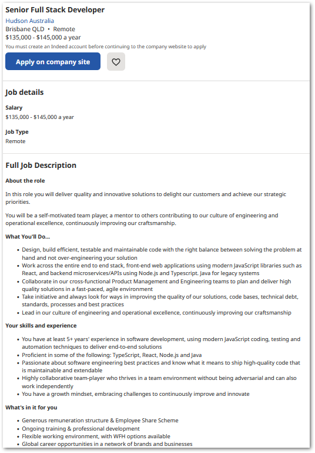

Hello, my name is Sam, and I am originally from Bristol, England. I moved to Australia when I was 6 years old and have spent most of my life in Brisbane. Before receiving my Certificate IV in Cyber Security, I worked in the hospitality industry. However, I recently decided to make a change and started a job in Information Technology, as a tech support officer. I am passionate about software development and have decided to pursue it as a profession. I have always been interested in technology and have grown to love the endless opportunities and enjoyment that it offers. As a fun fact, I am related to Robert the Bruce, the former king of the Scots, who was famously depicted in the movie Braveheart. But don't worry, I don't have any plans to betray anyone or take their land or freedom!
In recent years and since commencing my job, I have grown increasingly interested in programming and developed a passionate curiosity into how far I can take myself with it. I have always grown up around computers, with my father being in database management, and have always had a personal interest in Information Technology. I’m most interested by the way things work, as well as how they can be broken.
At the age of 14, I discovered the existence of an exploit called Twilight Hack for The Legend of Zelda: Twilight Princess. This exploit allowed me to inject unsigned code into the console via an SD card, modifying the firmware and enabling further exploitation. I was fascinated by the possibilities this opened up and began experimenting with debugging the console's RAM while playing games and creating my own "cheat codes". I used a modified GameCube Memory Card (USB Gecko) to connect the console to my computer and view the memory live, along with an application called WiiRD (Wii Remote Debugger) to alter values and rewrite code at the assembly level. For example, I was able to create a Moon-Jump cheat by isolating the address that decremented as my character fell, finding the one that controlled fall speed, and locking it to a positive float value. This allowed me to fly around in the game. My experiences with the Twilight Hack and the USB Gecko taught me a lot about IT, electronics, and problem-solving, and sparked my interest in these fields.
I decided to attend RMIT for my Bachelor of Information Technology because I wanted to further my education and advance my career. I had recently left the bartending industry and started a new job as a Customer Tech Support Officer, and my manager suggested that I consider pursuing an IT degree. He had earned his own Bachelor of Information Technology from RMIT and recommended the program to me. His endorsement, along with the encouragement of my friends and RMIT's reputation as a top-ranked university, convinced me to enrol in the prerequisite courses through OUA. Overall, I felt that RMIT was the best choice for me and my goals.
I expect to gain a comprehensive understanding of software development and the technologies involved, with a particular focus on software development, encryption, and cyber security. I also hope to develop the skills I need to excel in my current job and build a long-term career in the tech industry. I believe that the Bachelor of Information Technology degree at RMIT will provide me with the knowledge, skills, and opportunities I need to achieve my goals. I am looking forward to learning from experienced faculty members and collaborating with my fellow students on real-world projects. Overall, I am confident that my studies at RMIT will prepare me for success in the fast-paced world of technology.

placeholder
placeholder
placeholder